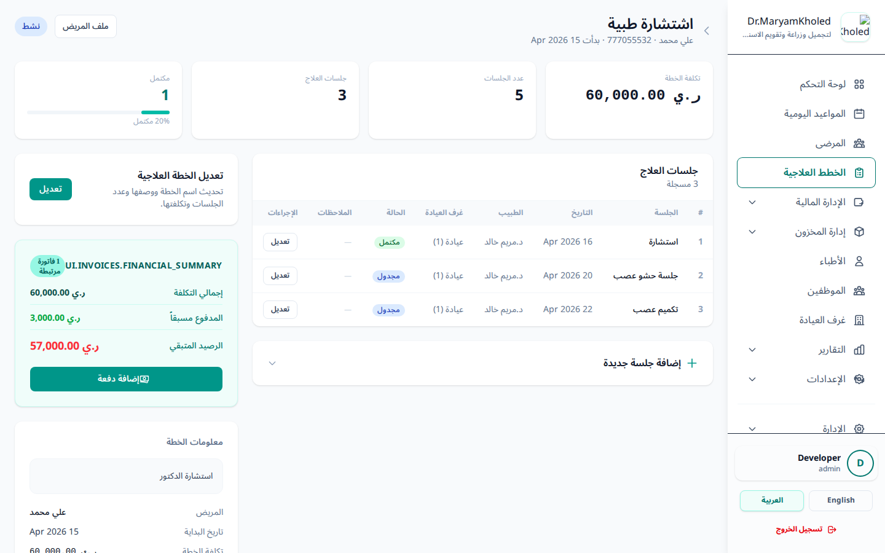
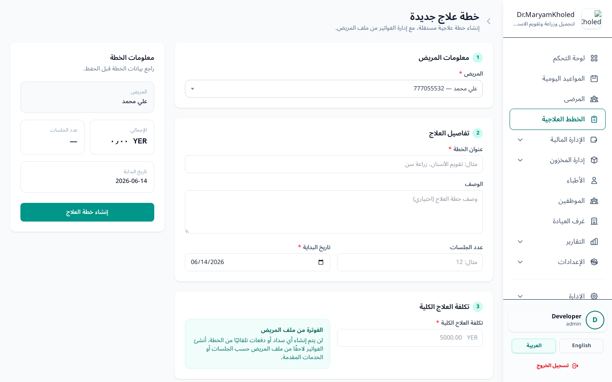
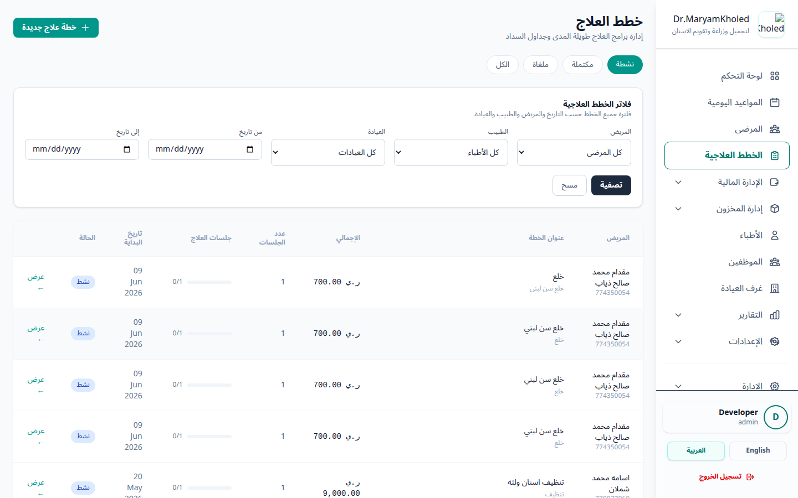
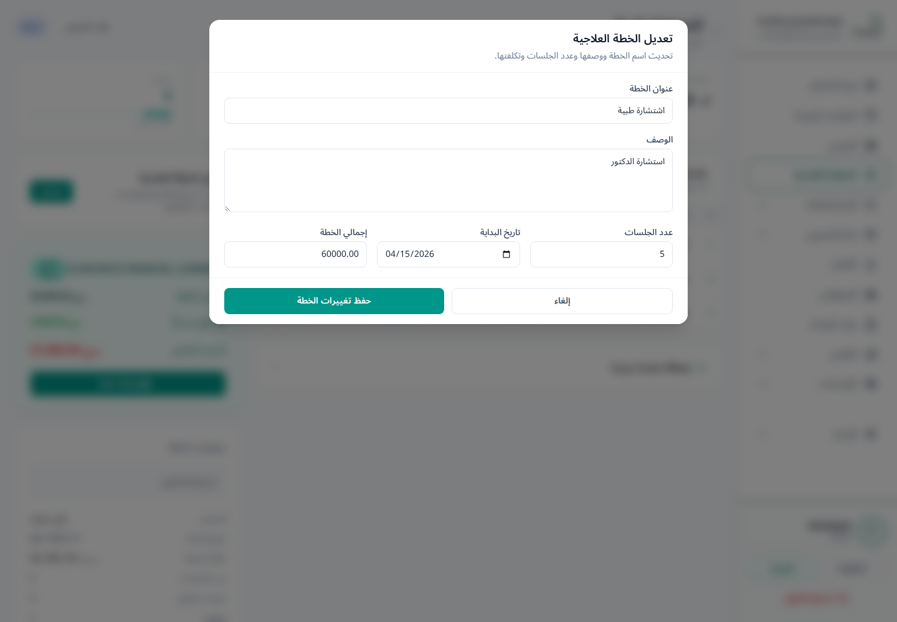

مفهوم خطة العلاج والجلسة الطبية
يقوم النظام بالفصل المنطقي بين «خطة العلاج» (Treatment Plan) و «الجلسة الطبية» (Session) لتغطية طبيعة العمل الحقيقية في عيادات الأسنان:
- خطة العلاج: هي المخطط العام المتكامل لحالة المريض، مثل "تقويم أسنان كامل" أو "زراعة ضرس علوي". تمتاز بوجود تكلفة إجمالية ثابتة ومتفق عليها مسبقاً، وعدد مستهدف من الجلسات المتوقعة لإتمام العلاج.
- الجلسة الطبية: هي الزيارة الفعلية الفردية التي يقوم بها المريض لتنفيذ جزء من خطة العلاج الكبرى. ترتبط كل جلسة برقم تسلسلي، وتاريخ محدد، وطبيب معالج، وتفاصيل طبية لما تم إنجازه.

خطوات إنشاء خطة علاجية جديدة
يتم إعداد خطة العلاج بعد الكشف الأولي للمريض لتحديد الاحتياجات الطبية والتكلفة المالية الكلية. والطريقة المُوصى بها هي إنشاء الخطة من داخل ملف المريض مباشرةً ليتم ربطها به تلقائياً.
- افتح ملف المريض ثم اضغط زر «خطة علاج جديدة» (أو انتقل إلى تبويب «خطط العلاج» من القائمة الجانبية واضغط زر «خطة علاج جديدة»).
- تأكّد من «المريض» المحدد؛ يُختار تلقائياً عند الفتح من ملف المريض، أو اختره من القائمة المنسدلة للبحث عند الفتح من التبويب العام.
- أدخل «عنوان الخطة» (حقل إجباري - مثال: زراعة سنين وزرع عظم).
- اكتب «الوصف والتفاصيل الطبية» (اختياري - تفاصيل السن والخطوات المتوقعة).
- أدخل «إجمالي التكلفة المتوقعة» (حقل مالي إجباري، يجب أن يكون بقيمة 1 فأكثر).
- أدخل «عدد الجلسات المتوقع» (اختياري، يمثل العدد التقديري بين 1 و 200).
- حدد «تاريخ بدء الخطة» (حقل إجباري، ويكون تاريخ اليوم بشكل افتراضي).
- اضغط على زر «إنشاء خطة العلاج».

إضافة الجلسات ومتابعة تقدم الخطة
مع كل زيارة جديدة للمريض، يتم تسجيل جلسة فرعية جديدة لتتبع سير العمل وتحديث مستوى تقدم الخطة تلقائياً.
- ادخل على صفحة خطة العلاج المحددة واضغط على زر «إضافة جلسة جديدة».
- أدخل «عنوان الجلسة» (مثال: الجلسة الأولى - حفر وتحضير القناة).
- حدد «تاريخ الجلسة»، وربطها بـ «الطبيب المعالج» و «غرفة العيادة» (اختياري).
- اكتب تفاصيل الإجراء في حقل «ملاحظات الجلسة» (مثال: تم حفر العصب ووضع حشوة مؤقتة).
- حدد «حالة الجلسة»: مجدول (Scheduled)، مكتمل (Completed)، أو ملغي (Cancelled).
- اضغط على زر «تسجيل الجلسة».

تعديل جلسة قائمة
يمكنك تعديل أي جلسة مسجلة سابقاً لتصحيح بياناتها أو تحديث حالتها (مثلاً عند إتمام جلسة كانت مجدولة).
- من جدول جلسات الخطة، اضغط على زر «تعديل» بجانب الجلسة المطلوبة.
- عدّل «عنوان الجلسة» أو «تاريخ الجلسة» أو «الطبيب المعالج» أو «غرفة العيادة» أو «ملاحظات الجلسة» حسب الحاجة.
- غيّر «حالة الجلسة» بين: مجدول (Scheduled)، مكتمل (Completed)، أو ملغي (Cancelled).
- اضغط على زر «حفظ تغييرات الخطة».
تعديل بيانات خطة العلاج
يمكنك تعديل البيانات الأساسية للخطة بعد إنشائها لتصحيح أي معلومة أو إعادة ضبط التكلفة وعدد الجلسات.
- من صفحة تفاصيل خطة العلاج، اضغط على زر «تعديل الخطة».
- عدّل «عنوان الخطة» (إجباري) أو «الوصف والتفاصيل الطبية» (اختياري).
- عدّل «إجمالي التكلفة المتوقعة» (إجباري، بقيمة أكبر من صفر) و «عدد الجلسات المتوقع» (اختياري، بين 1 و 200).
- عدّل «تاريخ بدء الخطة» (إجباري) عند الحاجة.
- اضغط على زر «حفظ تغييرات الخطة».

الربط المالي وإصدار فواتير الخطط
يمتاز نظام ProDentic بربط الفواتير والدفعات بخطط العلاج لتتبع المبالغ المدفوعة والمتبقية لكل خطة على حدة بدلاً من تحصيلها بشكل عشوائي.
- من صفحة خطة العلاج، اضغط على زر «إنشاء فاتورة الخطة».
- إذا كانت هذه الفاتورة الأولى للخطة، سيفتح النظام شاشة إصدار الفاتورة محملة ببيانات خطة العلاج والمريض تلقائياً.
- أضف الخدمات المرتبطة بخطة العلاج في جدول البنود، واربط كل بند بـ «الجلسة الطبية» المناسبة (يعرض النظام جلسات الخطة غير الملغاة فقط).
- لتسجيل سداد مالي، أدخل المبلغ في حقل «المدفوع الآن» (Paid Now)، وحدد طريقة الدفع والرقم المرجعي عند الاقتضاء.
- اضغط على زر «إنشاء الفاتورة / تسجيل الدفعة».

المحددات البرمجية والمالية للخطط
يفرض النظام قيوداً صارمة لضمان سلامة العمليات الطبية والمالية:
- فاتورة واحدة فقط: يسمح النظام بإنشاء فاتورة مالية واحدة فقط لكل خطة علاج. ولا يمكن إنشاء فواتير متعددة لنفس الخطة لمنع تشتيت الدفعات.
- سقف التكلفة الإجمالية: يمنع النظام تماماً تجاوز إجمالي بنود الفاتورة لقيمة "تكلفة الخطة الأصلية" المبرمجة عند إنشاء الخطة.
- إقفال الفواتير المكتملة: إذا تحولت حالة خطة العلاج يدوياً أو آلياً إلى «مكتملة» (Completed)، يتم إقفال بنود الفاتورة بالكامل ويمنع النظام تعديلها أو حذفها، ويقتصر الإجراء المالي على استلام الدفعات المتبقية فقط.
- منع التنزيل دون رصيد مدفوع: لا يسمح النظام بتعديل بنود الفاتورة لتقليل إجمالي الفاتورة إلى قيمة أقل من مجموع المبالغ المسددة فعلياً بسندات القبض المضافة مسبقاً.